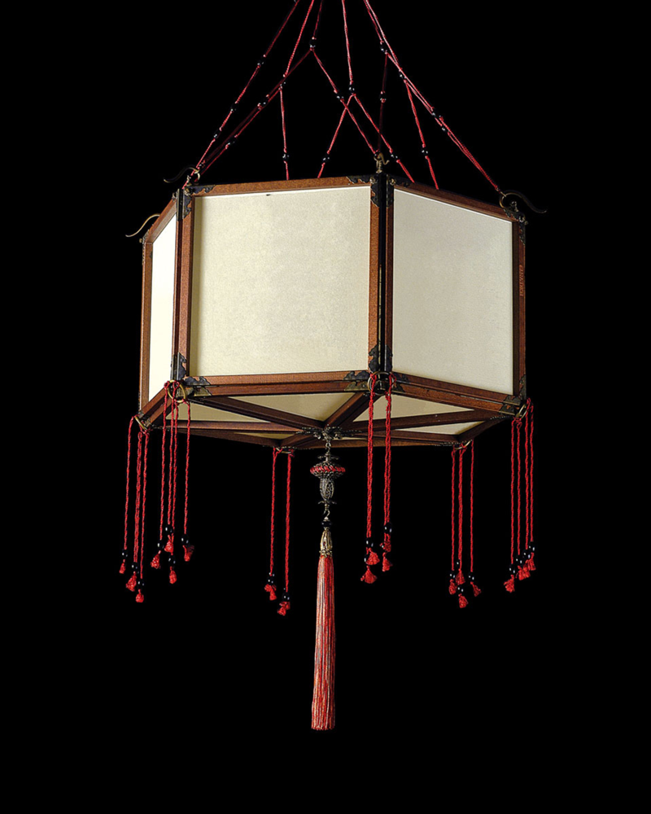
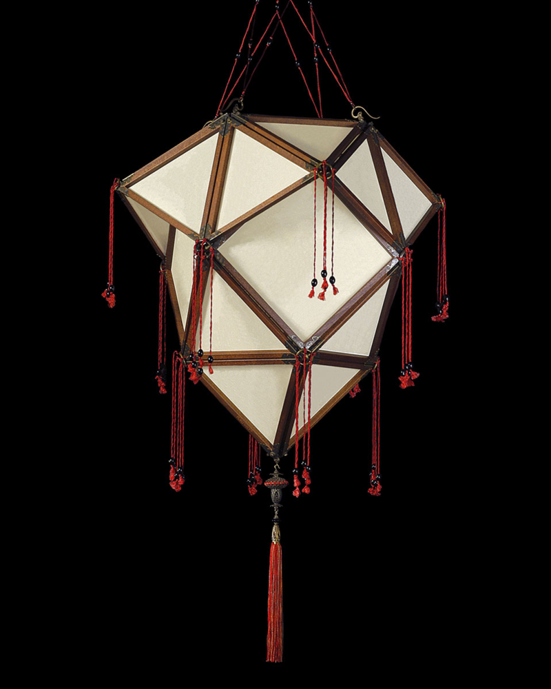
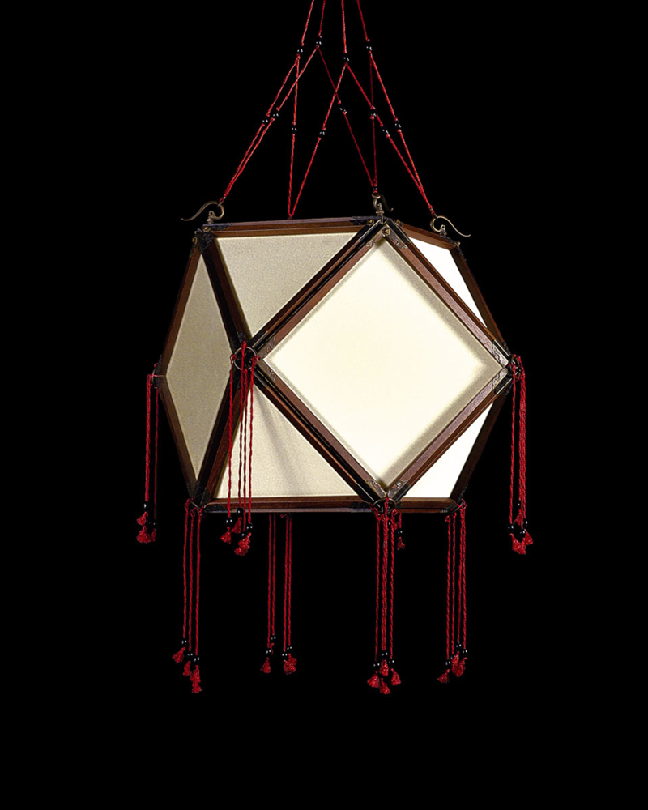
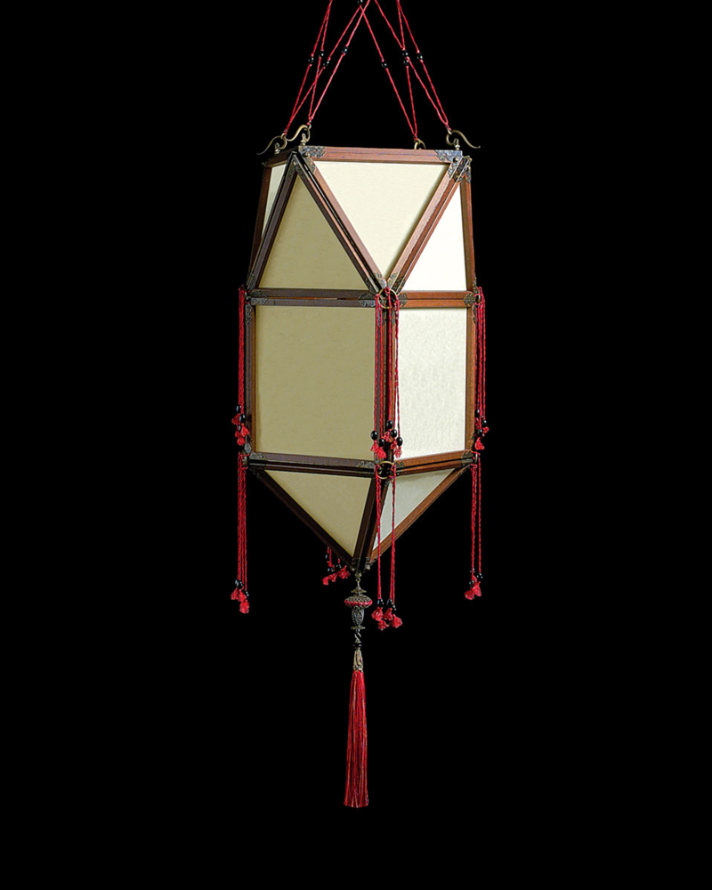
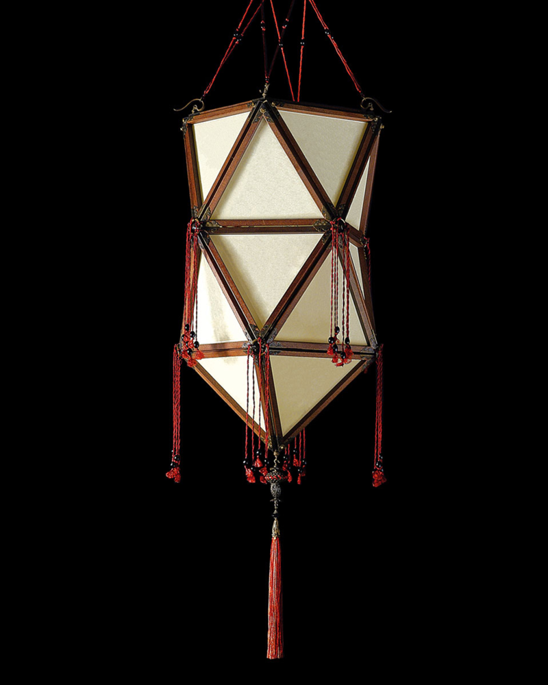
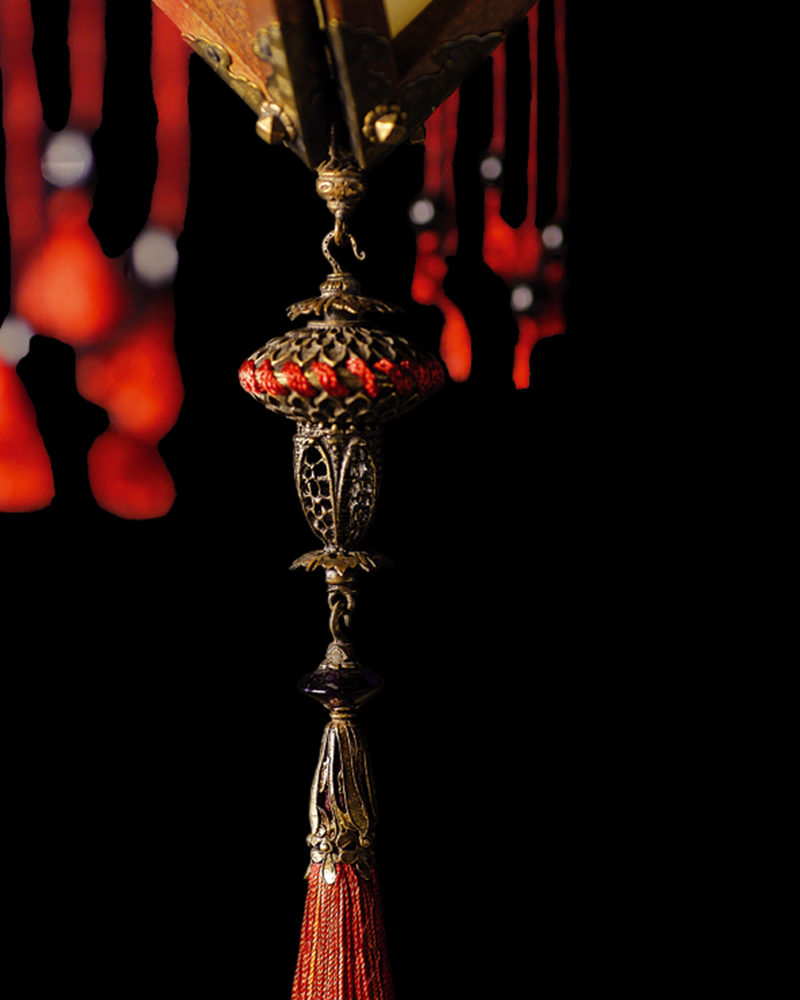
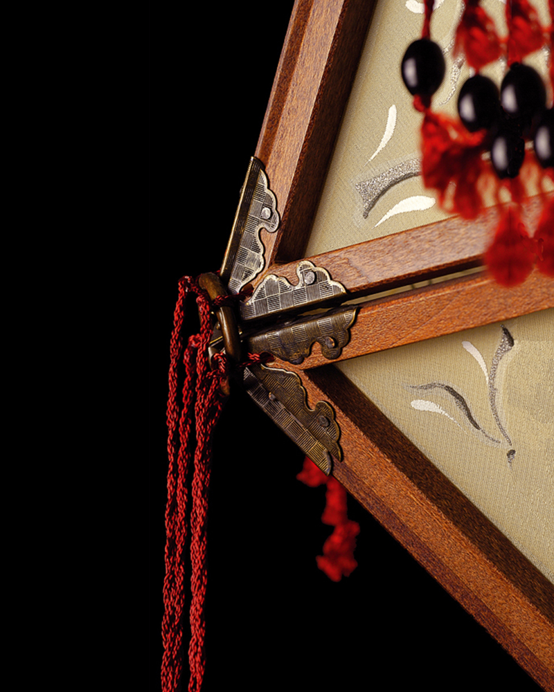

Concubine, silk lamps by Mariano Fortuny
The Concubine lamps by Mariano Fortuny embody a refined synthesis of structure, material, and light, reflecting the Oriental aesthetic that deeply fascinated the artist. Their forms recall suspended lanterns, defined by a precise geometric language and softened by the presence of silk, which transforms light into something diffused and intimate.
A wooden framework shapes and protects the silk panels, giving each lamp a clear architectural identity. The structure remains visible and essential, creating a rhythm of lines and volumes that defines the object without overwhelming it. The silk, left free from decorative prints, reveals subtle silvery reflections that emerge through illumination, emphasizing the material in its purest state.
The presence of cords and tassels introduces a vibrant contrast and a sense of suspension, reinforcing the lightness of the composition while subtly echoing Eastern visual traditions. These elements do not function merely as decoration, but contribute to the overall balance between structure and softness.
Rather than serving as a purely functional source of light, these lamps are conceived to shape atmosphere. The light they emit is soft and enveloping, capable of transforming space into something more intimate and refined. Whether displayed individually or arranged in composition, they maintain a quiet presence, defined by a restrained elegance and a subtle, almost mysterious aura.